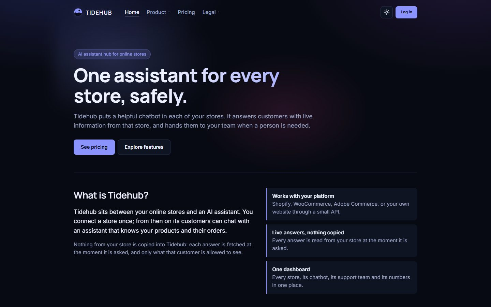
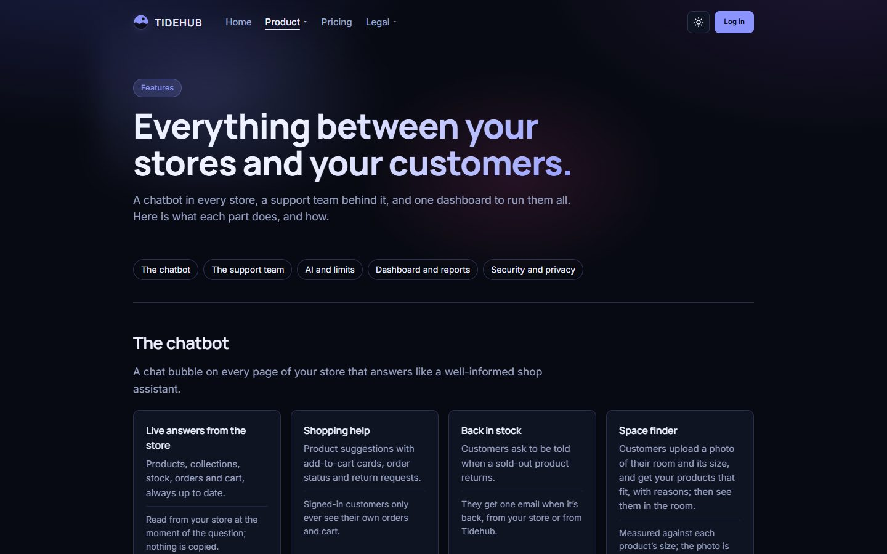
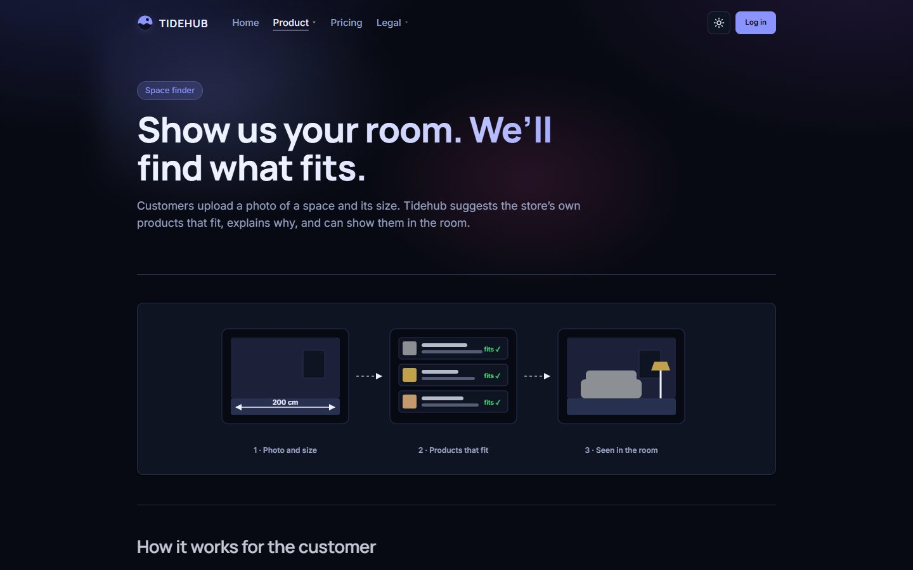

TideHub
One central platform that puts an AI chatbot inside many online stores. Customers get live answers about products, orders and carts, and a human takes over when needed. Nothing is copied from the store.
- Type
- B2B multi-tenant SaaS platform
- Role
- Architecture, design & development
- Backend
- Node.js 22, Express 5, TypeScript
- Dashboard
- Next.js 16, React 19
- Data
- PostgreSQL with Prisma
- AI
- Tool-calling LLMs: Groq, Gemini, OpenAI, Anthropic and more
- Platforms
- Shopify, WooCommerce, Adobe Commerce, custom API
- Status
- Working build (runs locally, not yet deployed)

Screenshot of the TideHub site, running locally. The source code is on GitHub.
The problem & the solution
Problem. Store owners want a helpful chatbot, but a bot that guesses is worse than none. It must know the live catalogue, show a customer only their own orders, and hand over to a real person. Building that again for every store, on every platform, doesn't scale.
Solution. TideHub is the central system between many stores and one assistant. A store connects once. Its customers then chat with an assistant that reads data live from that store through a small set of tools. Each request carries a signed identity, so private data is only ever read for the verified customer.
This is my largest project: a full B2B product with a public site, a role-based dashboard, a chat API, three platform integrations, live support and subscription billing.
Highlights
- One platform, many stores: multi-tenant, with owner, admin and support-agent roles
- Connectors for Shopify, WooCommerce and Adobe Commerce, plus a documented API for custom websites
- Live data only: answers are fetched at question time, nothing is stored or copied
- Signed requests (HMAC) so the AI can never choose whose data it reads
- 14+ chatbot tools: products, orders, returns, cart, policies and more
- Human hand-off: support queue, agents and live typing over Socket.IO
- Photo-based space finder that suggests products that fit a customer's room
- 34 automated test files covering security, the AI agent and the widget
How one chat message travels
The same flow works for every platform. Only the way the store proves who is asking changes.
Store widget
A lightweight chat button on every store page. The full chatbot loads only when the customer needs it.
Signed request
The store's platform vouches for the customer: Shopify App Proxy, a WordPress plugin or the customer's own token.
Verify & reason
TideHub checks the signature, then the AI picks tools. Private tools are only offered to logged-in customers.
Live answer
Tools call that store's API at once and the reply streams back with product and order cards.
A complete product, not just a chatbot
The chatbot
- Product search, details, collections and stock
- Order status, tracking, returns and profile for signed-in customers
- Add to cart and remove from cart, confirmed by the customer's own click
- Back-in-stock email alerts and help topics
- Reply streamed word by word
Human support
- First-come, first-served support queue per store
- Agents claim chats; admins assign them
- Live typing indicators and sound alerts
- Photo and video attachments, saved replies
- Chat hours and missed-customer capture
Dashboard
- Owner, admin and agent roles with separate views
- Add and manage data sources and their secrets
- AI provider keys, token budgets and usage reports
- Support, feedback and chat statistics
- Per-store SMTP and activity audit log
Billing
- Stores are free to connect
- Per-store AI token allowance, agents and email add-ons
- Stripe subscriptions, top-ups and tax handling
- Daily token budgets with limit warnings
Space finder
- Customer uploads a room photo and its size
- Products are measured against the space
- Each suggestion comes with a reason
- Photos are never saved
Extensible
- A connector interface: add a platform without touching the chat
- Documented API for custom websites
- Choose the AI provider with one setting, with fallbacks
- Widget builds for each platform
Built so the AI can't leak data
Private data stays private
- The AI can't choose the store or the customer
- Private tools aren't even offered to visitors
- Every returned order is checked to belong to the customer
- Prompt-injection and query-injection defences
Platform hardening
- HMAC-signed requests, rejected after 5 minutes
- Store secrets encrypted with AES-256-GCM
- bcrypt passwords and revocable session cookies
- Protection against requests to internal addresses (SSRF)
Performance & limits
- Simple messages answered without the AI
- Only the tools a message needs are sent to the model
- Short caches for public store data
- Rate limits per customer, per store and per IP, plus a daily AI budget
A look around


What it's built with
Need a chatbot for your store or platform?
I build AI assistants, multi-tenant dashboards and platform integrations that connect to live data safely.
Discuss your project →